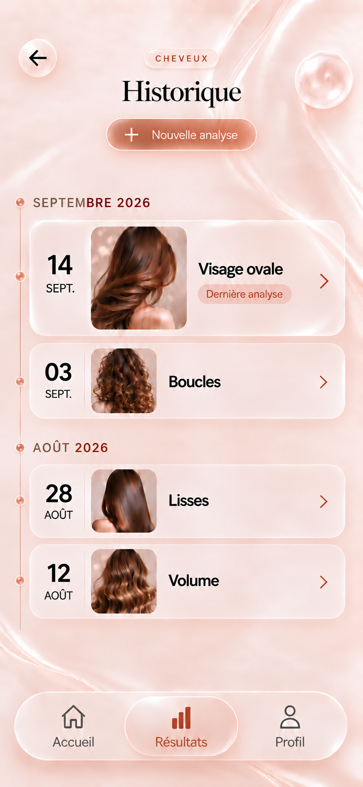

<!doctype html>
<html lang="fr"><meta charset="utf-8"><title>Historique V2 — comparaison visuelle</title>
<style>
*{box-sizing:border-box}body{margin:0;padding:16px;background:#e9e3df;color:#49372c;font:14px Arial,sans-serif}main{display:flex;gap:24px;align-items:start}h2{height:24px;font-size:14px;margin:0 0 8px}.frame{width:393px;height:852px;overflow:hidden;background:#f9e3dd}img{display:block;width:393px;height:852px}iframe{display:block;width:393px;height:852px;border:0}body.zoom .frame{width:852px;height:1847px}body.zoom :is(img,iframe){transform:scale(2.1679389);transform-origin:top left}
</style>
<main><section><h2>Référence fournie</h2><div class="frame"></div></section><section><h2>Composants natifs — Historique V2</h2><div class="frame"><iframe src="http://localhost:5173/?history=v2&history-demo=1#ANA-12" title="Historique V2 interactif"></iframe></div></section></main>
<script>if(new URLSearchParams(location.search).get('zoom')==='2')document.body.classList.add('zoom');</script></html>
